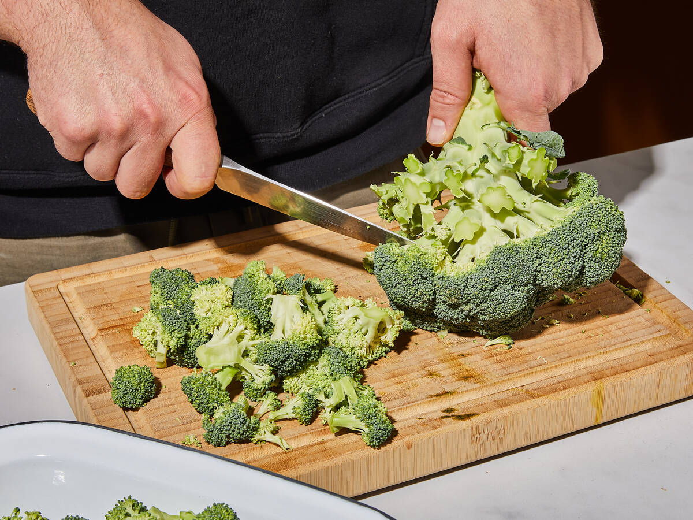
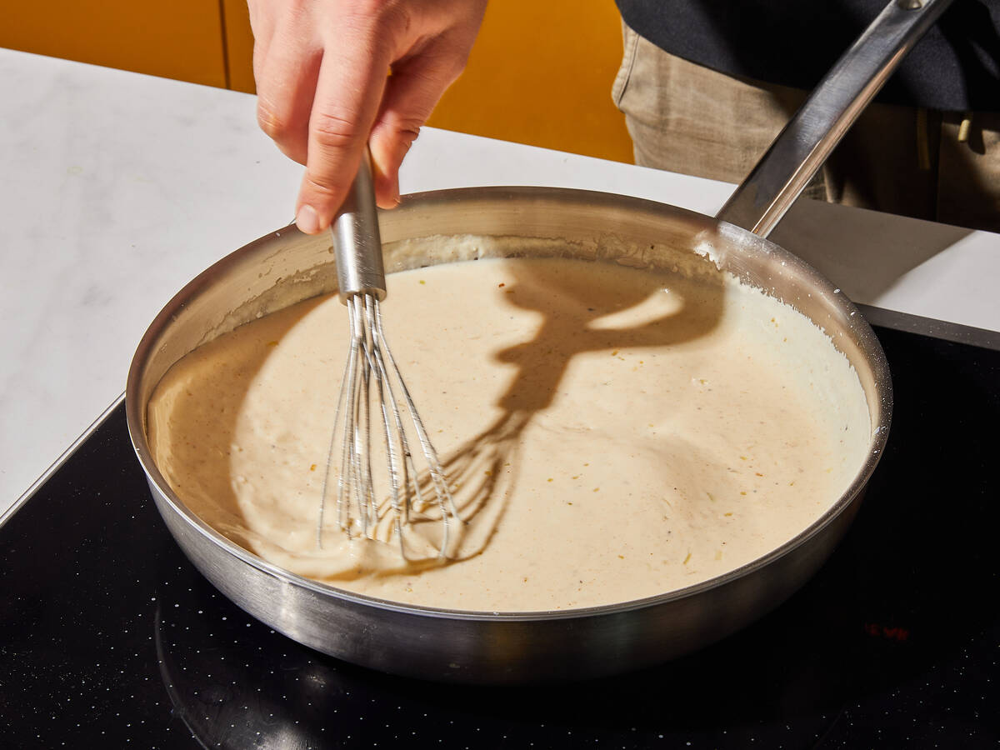
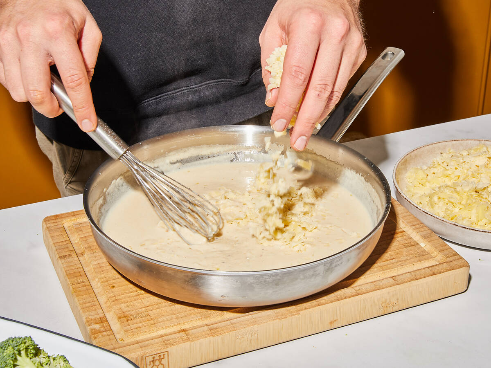
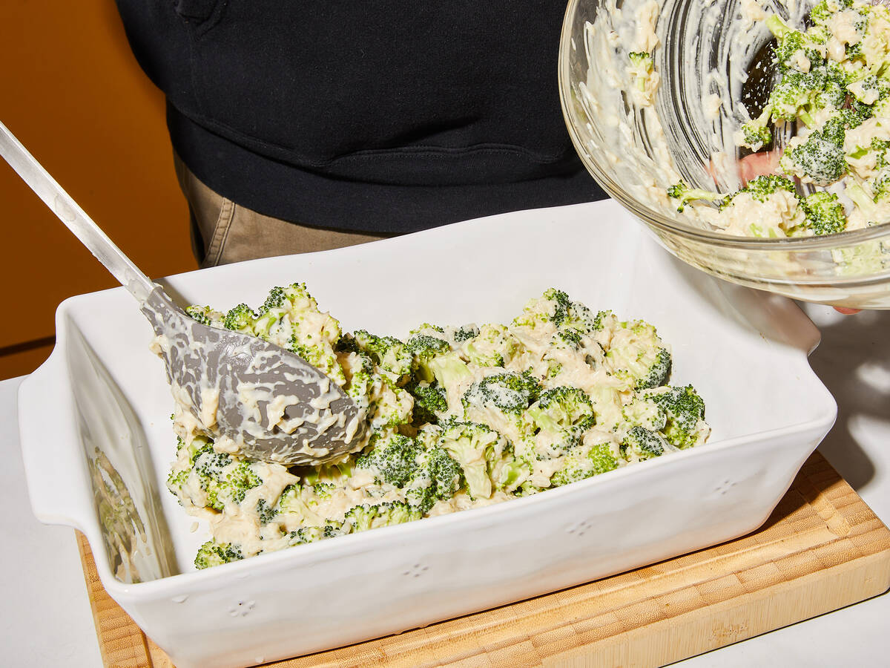

This fall it will have been 15 years since my parents loaded all of us kids up, along with all of our belongings, and moved across the country from San Diego to Northern Kentucky.
I was 12 at the time and sad, scared, uncertain of what the future held. I was leaving all of my very best friends that I had known all my life and would for the first time be the new kid. Mom did her best to keep our spirits up but I could see that she was also struggling with the change. After being on the road for 4 days and many games of I Spy, the little sense of adventure my siblings and I had wore off and we all sat in silence ready for the journey to be over.
"We're here!" I heard my parents say. My tired eyes opened just in time to see the bottom of the "Welcome to Kentucky sign. "Should we get our first bite of southern food?" my mom said in the worst attempt at a southern accent I have ever heard to this day. We pulled off of the first exit and straight towards Hattie Mae's, right next to the visitor center.
As we walked in the sweetest aroma filled my nose. I was about to find out just how subpar my mom's cornbread was. As I looked over the menu, I couldn't make my mind up for the life of me. When the waitress came for our order I said, "I will have one of your favorite dish please." "You sure hun?" she said as she glanced up from her order pad. I assured her and she went on her way. My life was forever changed when she brought my plate out.
In front of me sat a mountain of crispy golden gooey cheesy broccoli and rice casserole. I scrunched my face as I thanked her, certain I was not going to enjoy my meal. Who would eat cheese rice? With broccoli to boot? I took a bite and the rest is history. So many flavors and textures I had never experienced. It felt like a warm welcoming hug telling me, "you'll be alright, kid.
Enjoy my version of my first taste of southern cuisine.
Preheat the oven to 374 degrees F/190 degrees C. Cut broccoli into medium-sized florets. Dice the onions and garlic.
Add butter to a frying pan set over medium-high heat. Once melted, add the onions and garlic, and saute. Stir in flour. Gradually pour in the milk and continue stirring until thickened.
Remove the sauce from heat and add the mustard, paprika, cream cheese, and half of the cheddar cheese. Stir until everything has melted. Season to taste with salt and pepper.
Mix rice, broccoli, and cheese sauce and pour into a baking dish. Top with remaining cheese and bake for approx. 35 mins.
